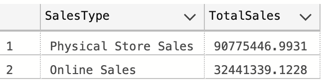
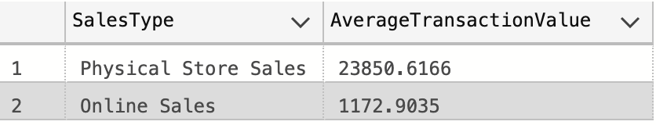
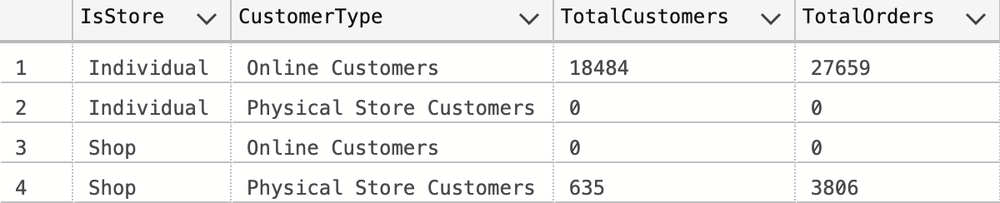
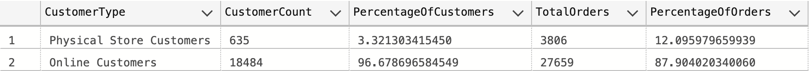
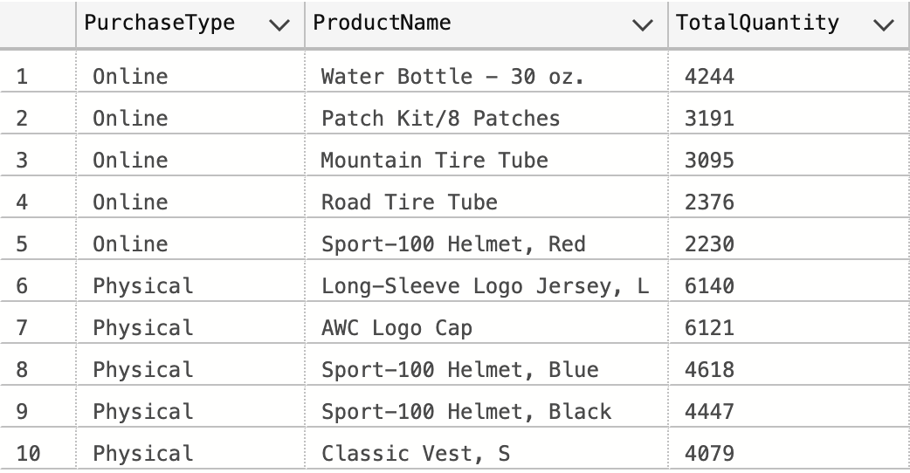
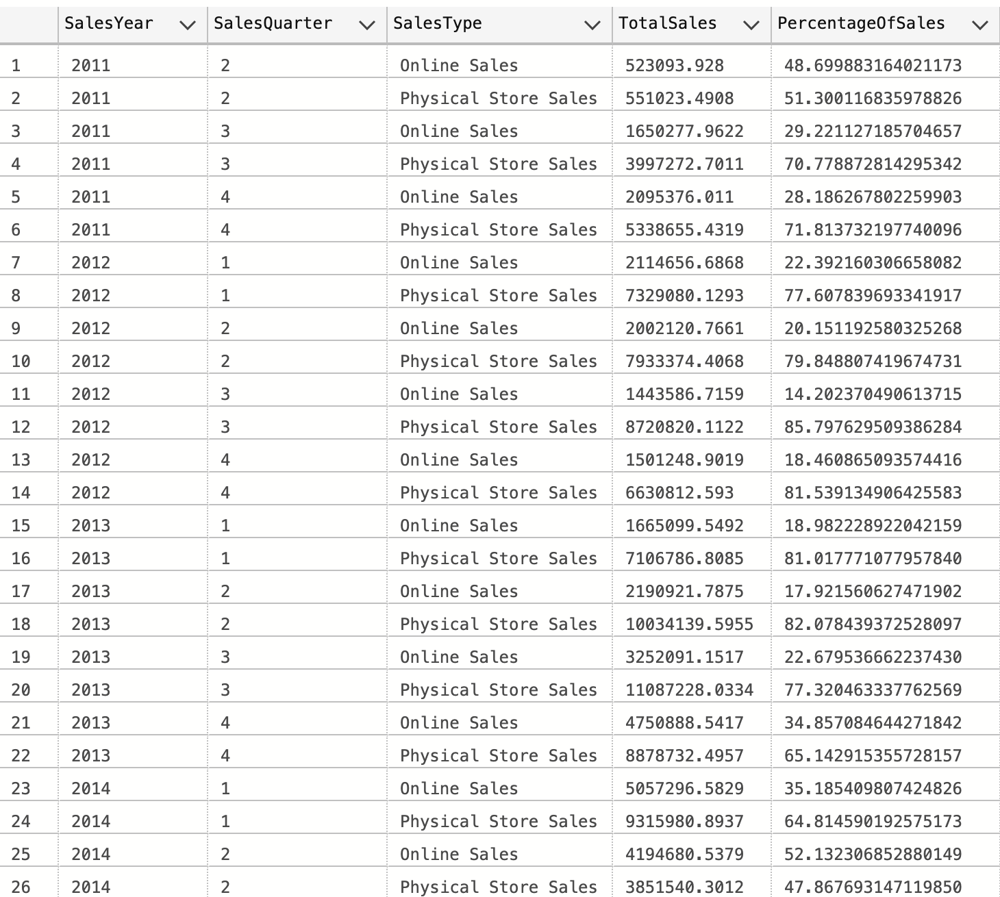
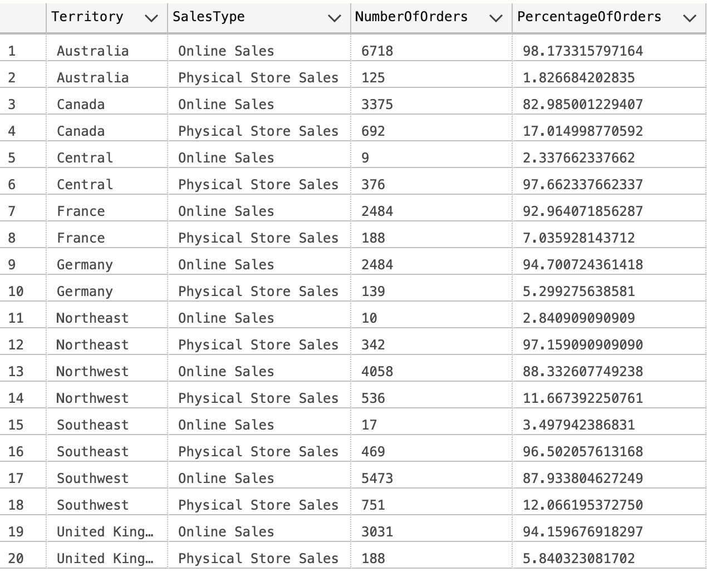

Adventure Works
Sales Channel Analysis
This is a report on the fictional bike manufacturing and retail company Adventure Works, using a database hosted in the Microsoft SQL server. My goal for this project was to analyze compare the digital and in-person income streams.
Digital vs Physical Store Sales Channel Analysis
Total Sales by Channel
Physical stores generate more sales - Adventure works makes about $90,775,446.99 from sales made at physical stores, which amounts to about 73.67% of the total sales. Online sales lag behind in this regard, as $32,441,339.12 of the sales made were made online. This amounts to 26.33% of the total sales. Note that this includes all of the $123,216,786.12 in revenue made by Adventure Works over the time data was tracked.
Average Transaction Values
Larger Average Purchase In-Store - When making a physical purchase, customers made a larger average purchase than those who made their orders online. Physical stores saw customers make an average purchase of $23,850.62, while customers made an average purchase of $1,172.90 while online. This means that the average purchase made by customers who went through a physical channel was 20.33 times larger than those made by an online customer.
Shop or Individual Records
Shops Recorded as In-Store, Individuals as Online - All individual customers shopped online, while all shop customers shopped physically. If we compare with our findings in question 3, we can see that we have the same raw numbers in each group This gives context to future findings. All of our findings which apply for physical store customers apply to shops and all of our findings that applied for online customers apply for individual shoppers. These findings provide explanations for why physical sales were so much higher than online purchases, since shops are much more likely to buy a large number of products. Meanwhile, shops would likely partner with Adventure Works and, because of that, be more likely to buy merchandise with a logo. There is no investigation into salespeople within this report because salespeople only had physical store clientele, meaning that they were only needed to make large sales to shops.
Customer Purchasing Trends
- Majority Online Customers - Online (individual) customers made up a large majority of the total customer base, with 18484 customers, or 96.68%, of the customers making online orders. Meanwhile, the physical store sales (shop sales) total 3.32% of customers. Note that the sum percentage of customers of both groups is equal to 100, which means that the two groups are mutually exclusive.
- Customers at physical stores saw more repeat business - Note that the percentage of orders by physical store customers was larger than the percentage of customers they made up. From this, we can deduce that customers who were making orders through physical channels, or the shops that Adventure Works sold to, were more likely to do repeat business with Adventure Works than customers who bought online, as individuals may have only needed to make one purchase to fill one specific need.
Product Preferences
- Online customers purchased more maintenance materials - Three of the top five products purchased by online customers were items for maintenance on a bike, specifically pertaining to the tire (Patch kit, mountain tire tube, and road tire tube). The other two items, a water bottle and helmet, were purchases that seemed to serve practical purposes. Since we know online customers are individuals, we know that these were likely one off purchases to fix or replace items.
- Physical store purchases favored merchandise - Three of the top five purchases for physical orders were Adventure Works merchandise (The logo jersey, logo cap, and vest). This indicates that people who shopped in store were more likely to buy something with an adventure works logo. Since we know that shops are put down as physical purchases, it is very possible that the reason for this is that shops would partner with Adventure Works and, because of that, be more likely to buy merchandise with a logo.
Seasonal Trends
- Seasonally, not a clear trend - There does not appear to be much of a correlation between physical vs online stales and the quarter. Take Quarter 2 between 2011-2014. The percentage of physical sales in that quarter in each year is as follows: 51.30% in 2011, 79.84% in 2012, 65.14 in 2013, and 47.87 in 2014. Each quarter follows a similar trend by year over the respective timeframe.
- Yearly, a rise in online sales - Physical store sales remain about the same from year to year, but at the end of 2013 into 2014 we see a rise in online sales. As more time goes by, it starts to become more likely that sales were made through online channels. We know that the increase in online sales means that there is an increase sales to individuals, which may correspond to an increase in brand awareness over the time period.
Territory Trends
- Territories trend heavily towards one sales type - Each territory makes a large majority of their sales in one of the two sales channels. The closest split between online and physical sales was in Canada, where 82.99% of the sales were made online and 17.01% of the sales were made by a physical channel. Meanwhile, Australia was dominated by online sales as 98.17% of orders in Australia were made online while only 1.83% of orders were made physically.
- Territories which tend toward Online vs Physical. - People in the Central, Northeast, and Southeast territories prefer to shop in physical locations for Adventure works, while all other territories preferred shopping online. With the association of sale type and customer type in mind, this means that Adventure Works made most of their sales business to business in the Central, Northeast, and Southeast United States, whereas all other territories were mostly made up of individual customers buying online.
Click below if you are interested in viewing the SQL code on GitHub to see more of my process.
GitHub Link